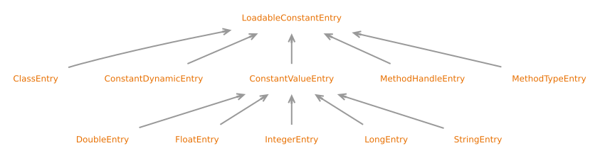

接口 LoadableConstantEntry
- 所有父接口:
PoolEntry
- 所有已知子接口:
ClassEntry, ConstantDynamicEntry, ConstantValueEntry, DoubleEntry, FloatEntry, IntegerEntry, LongEntry, MethodHandleEntry, MethodTypeEntry, StringEntry
public sealed interface LoadableConstantEntry
extends PoolEntry
permits ClassEntry, ConstantDynamicEntry, ConstantValueEntry, MethodHandleEntry, MethodTypeEntry
Marker interface for constant pool entries suitable for loading via the
ldc instructions.
The use of a LoadableConstantEntry is modeled by a ConstantDesc.
Conversions are through ConstantPoolBuilder.loadableConstantEntry(ConstantDesc)
and constantValue().
- See Java Virtual Machine Specification:
-
4.4 The Constant Pool
- Sealed Class Hierarchy Graph:

- 自:
- 24
- 另见:
{kind=link}
-
方法详情
-
constantValue
ConstantDesc constantValue()Returns a symbolic descriptor of this constant.- 返回:
- a symbolic descriptor of this constant
- 另见:
-
typeKind
-
Java API 非官方中文翻译项目 · GitHub · 报告此页面的问题或提出改进建议 · 查看完整中文版权声明
中文翻译文本版权 © 2026 本翻译项目贡献者，以 知识共享 署名-相同方式共享 4.0 国际 (CC BY-SA 4.0) 许可证发布。原始英文内容版权归 Oracle 所有，使用受原始许可条款约束。